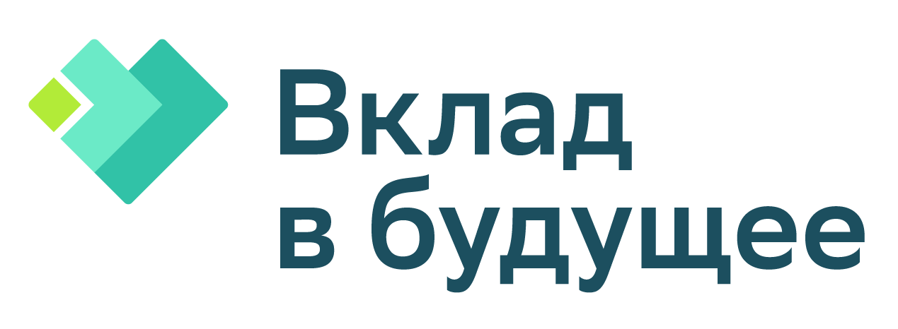
ВОЗМОЖНОСТИ
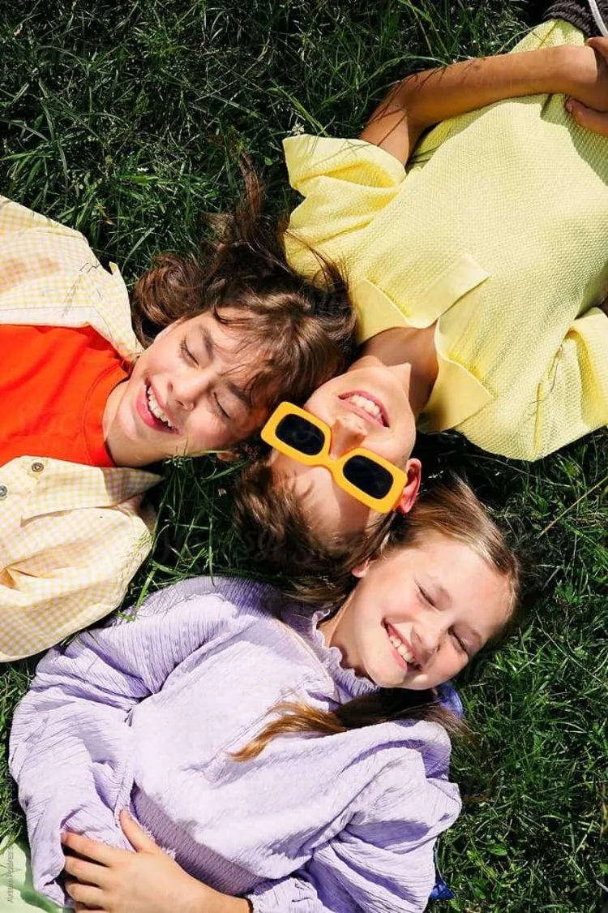
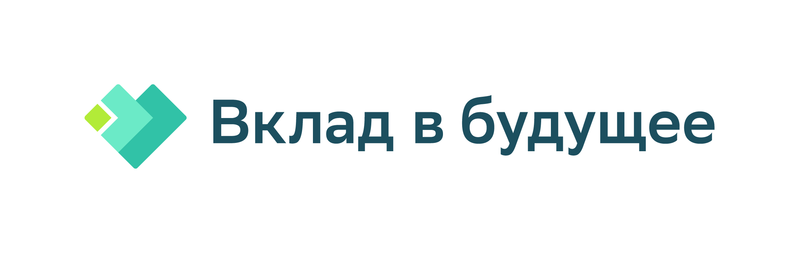
думаем о будущем
В центре внимания ребёнок
с особенностями развития и без.
И мир вокруг него
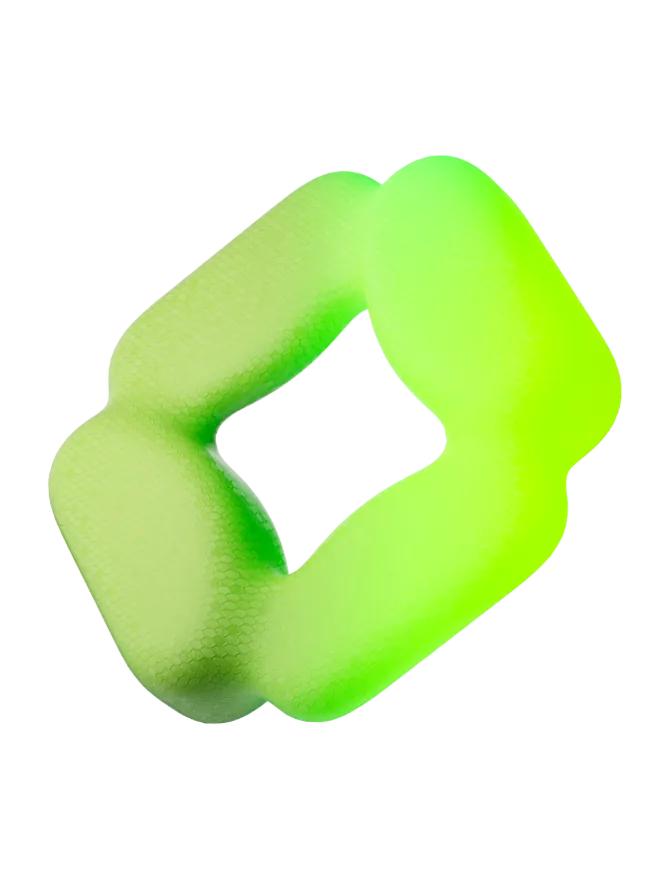
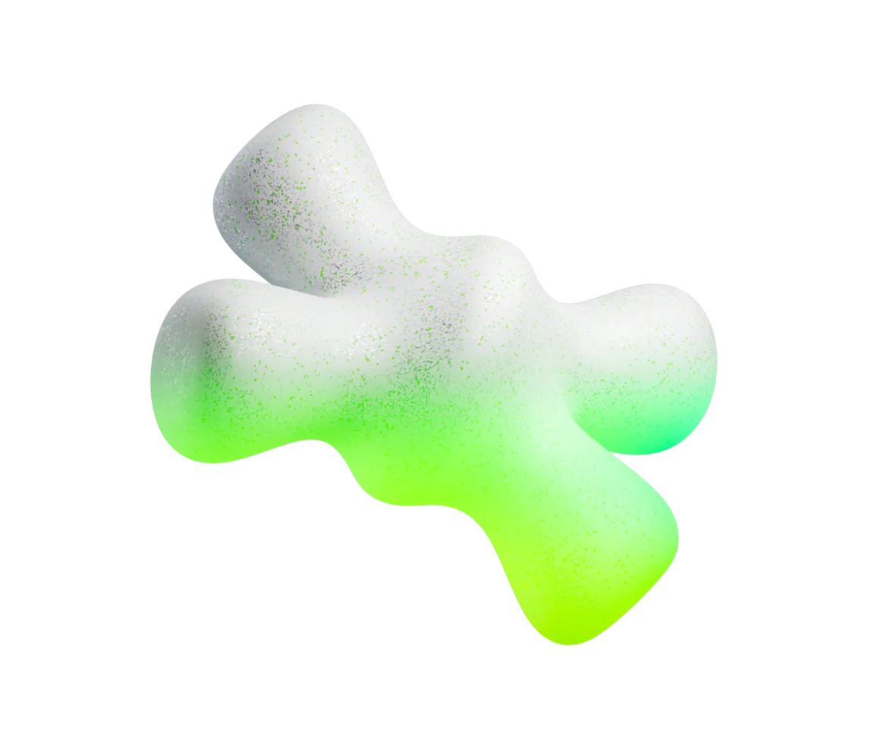
Миссия
потенциала человека и
расширению пространства его
возможностей для достижения
человеком своих устремлений
через развитие социального
сектора и системную работу для развития детей,
чтобы больше благополучных
людей вносили вклад
в устойчивое развитие страны
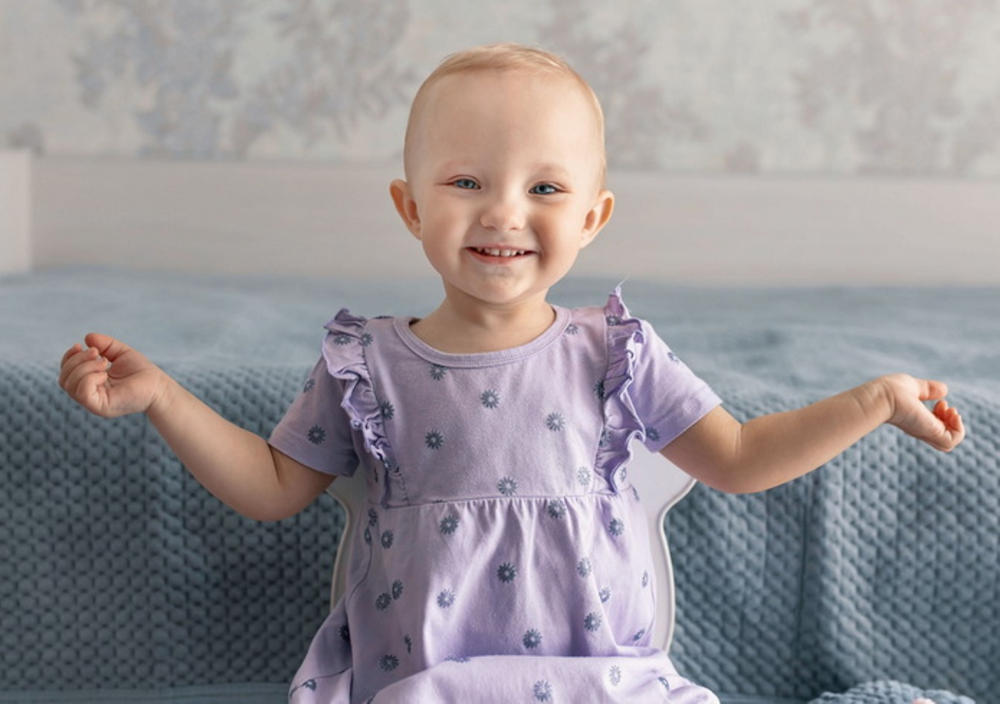
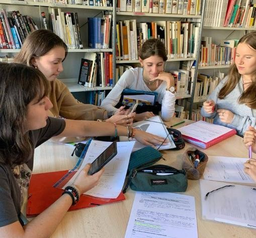
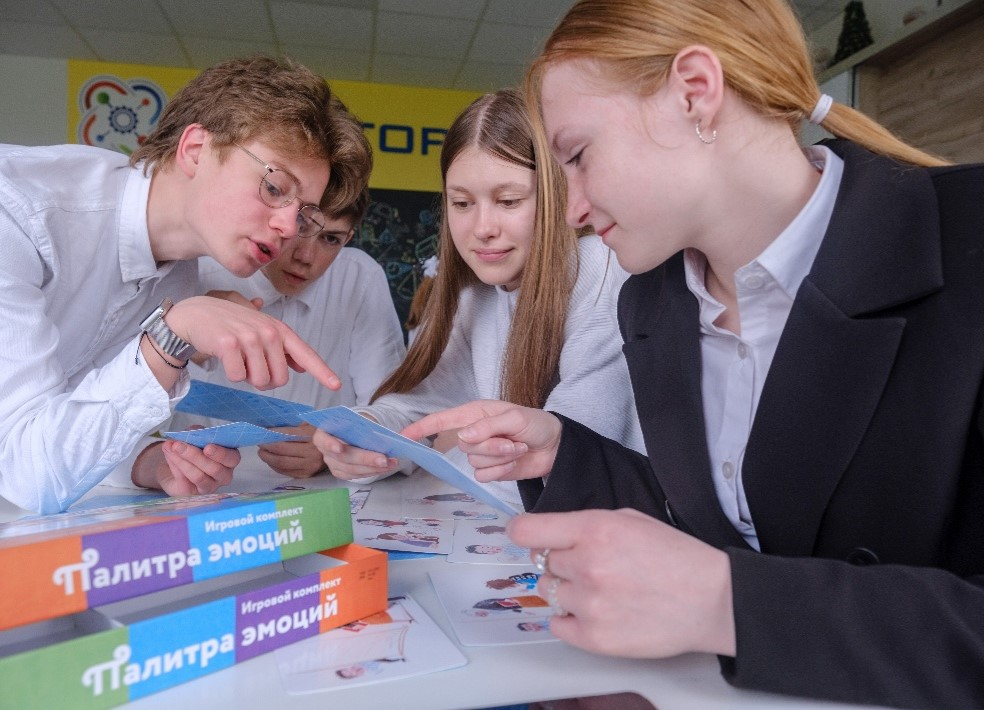
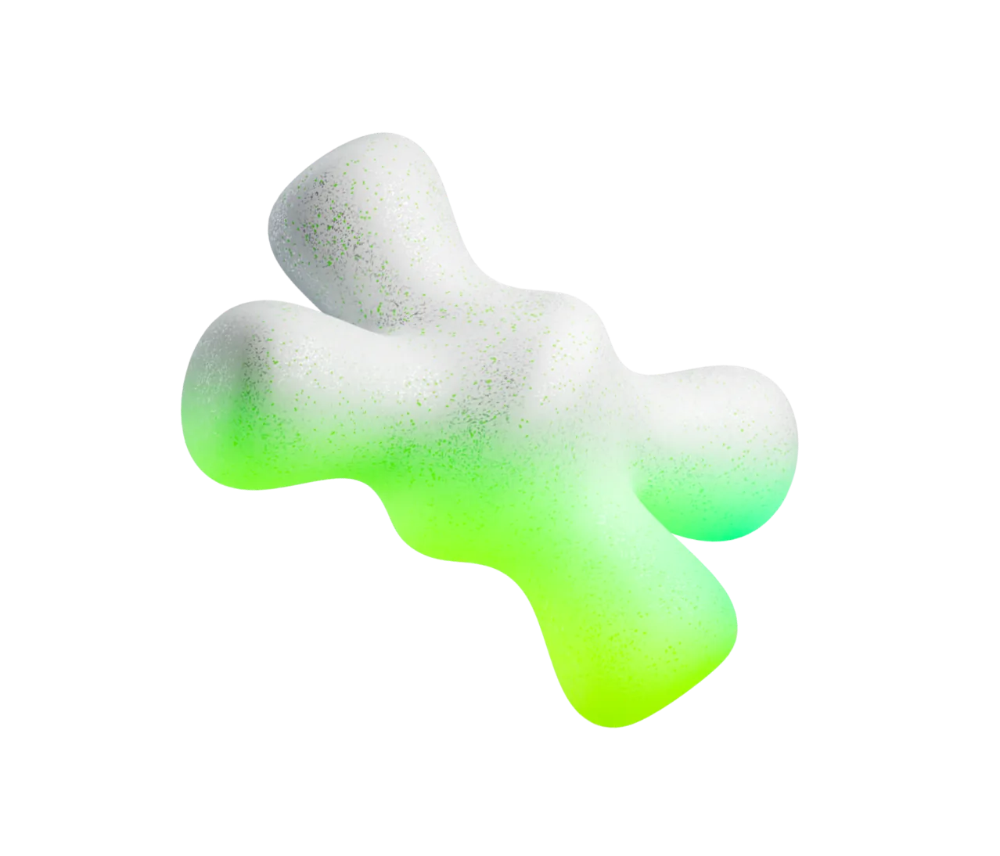
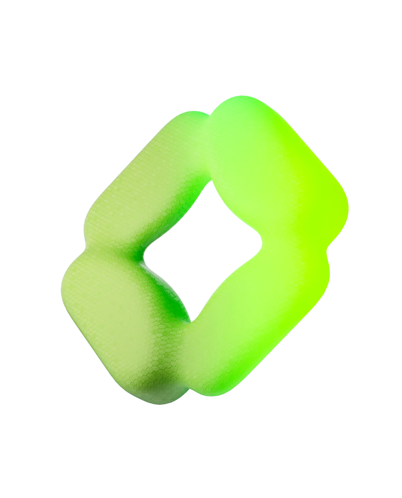
«Вклад в будущее»:
опора для развития
Просвещение
опора для развития и освоения навыков и компетенций XXI века
Поддержка сильных решений
опора для развития и масштабирования эффективных и доказательных практик и подходов
Развитие устойчивости НКО
опора для развития и устойчивости НКО и волонтерских инициатив
Исследования
опора для обнаружения прорывов и перспективных направлений для развития и создания социальных решений
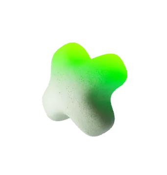
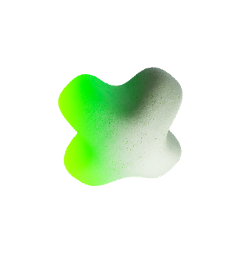
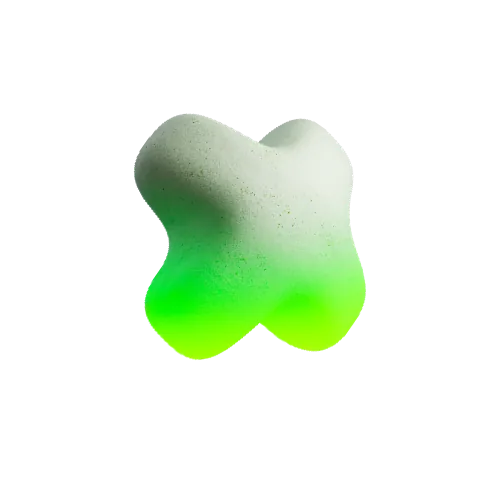
Благотворительный фонд «Вклад в будущее»
ТОП-3
в рейтингах благотворительных
фондов и НКО РФ
СОНКО
статус социально-ориентированного НКО
— поставщика социальных услуг
ПАРТНЁР
национальных проектов
России
ТОП-10
международных практик по
благополучию и здоровью детей
ЮНЕСКО
«ЗОЛОТОЙ СТАНДАРТ»
в конкурсах годовых
отчётов НКО
Благодарность от
ПРЕЗИДЕНТА РФ
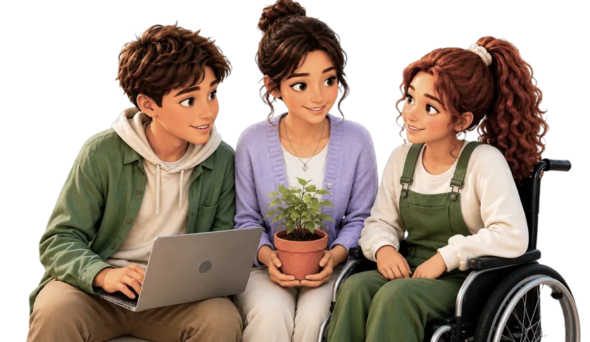
детей и молодёжи участвуют в просветительских активностях Фонда во всех регионах РФ
педагогов используют учебно-методические и просветительские материалы, разработанные при поддержке Фонда
некоммерческих организаций (НКО) получают поддержку фонда
рублей на поддержку занятий для детей с опытом сиротства и особенностями ментального развития
Развивающая среда
Формируем образовательную среду, в которой условия превращаются в возможности для развития потенциала детей и взрослых. Развиваем универсальные навыки и компетенции XXI века
Цифровые навыки
и компетенции
Популяризируем технологии искусственного интеллекта, развитие цифровых навыков и компетенций у детей и подростков, педагогов и родителей
Финансовая грамотность
Создаём комплекс доступных образовательных инструментов в области финансов, экономики и права для педагогов, родителей и детей от 5 до 18 лет
Инклюзивная среда
Создаём решения по социализации, адаптации, трудоустройству детей и молодых людей с особенностями ментального развития и/или оставшихся без попечения родителей
Вместе
Поддерживаем развитие системы благотворительности в России и повышение финансовой устойчивости некоммерческих организаций
Современные социальные решения
Развиваем социальные проекты и НКО. Учим применять современные подходы в технологической сфере и области социального проектирования
БлагоДаря
Помогаем создавать и управлять фондами целевых капиталов
Дайте мне точку опоры, и я переверну землю
Болевые точки
системы образования
Три способа двигаться от проблемы к решению
Через продуктовые решения
Через исследовательские практики
Через системные подходы
Работа с родителями
- кейс-инструкция эффективного партнерства между школами и семьями;
- 10 российских и 10 зарубежных практик открытости;
- анкета для оценки открытости школы к семье.
- сценарии встреч из учебно-методических комплектов;
- рекомендации по проектированию детско-родительских мероприятий в дайджесте «Семейный Edutainment».
- онлайн-курсы по социально-эмоциональному развитию и личностному потенциалу;
- ППК «Основы социально-эмоционального развития педагога и детей».
- «Семья на эмоциях»;
- «МамПапкаст»;
- хрестоматия художественной литературы;
- «Смотрим вместе».
Профориентация
- модуль «Я и мой выбор»;
- модуль «Я иду к мечте».
- Пройти онлайн-курсы по личностному потенциалу.
- «К полету готов» — инструкция о том, как помочь подростку стать по-настоящему взрослым: видео, статьи, чек-листы и памятки от надежных экспертов.
- Ресурсы для профессионального самоопределения школьников — игры, уроки, приложения, видео для развития навыков, помогающих ребёнку делать выбор и брать ответственность за свою жизнь.
Повышение учебной
мотивации детей
- Пройти онлайн-курсы по личностному потенциалу.
- Изучить пособие «Мотивация школьников XXI века: практические советы» (Т. О. Гордеева).
- «Основы социально-эмоционального развития педагога и детей» — педагогам;
- «Человекоцентричное управление образовательной организацией» — руководителю;
- «Команда развития образовательной организации: от исследования к созданию развивающей среды» — командам.
Повышение мотивации и вовлечённости педагогов
- «Основы социально-эмоционального развития педагога и детей», «Искусственный интеллект в образовании» — педагогам;
- «Человекоцентричное управление образовательной организацией» — руководителю;
- «Команда развития образовательной организации: от исследования к созданию развивающей среды» — командам.
- Мастерских Программы (Мастерской исследования, мастерской диссеминации опыта);
- Педагогических фестивалях и конференциях Программы.
- Включаться в сообщества Программы и создавать свои.
Первичная профилактика
асоциального поведения
- Онлайн-курсы по социально-эмоциональному развитию и личностному потенциалу
- ППК «Основы социально-эмоционального развития педагога и детей»
- УМК для 1–4, 5–7 и 8–11 классов
- ППК «Человекоцентричное управление образовательной организацией» — руководителю
- ППК «Команда развития образовательной организации: от исследования к созданию развивающей среды» — командам
Поддержка школ с нестабильными образовательными результатами
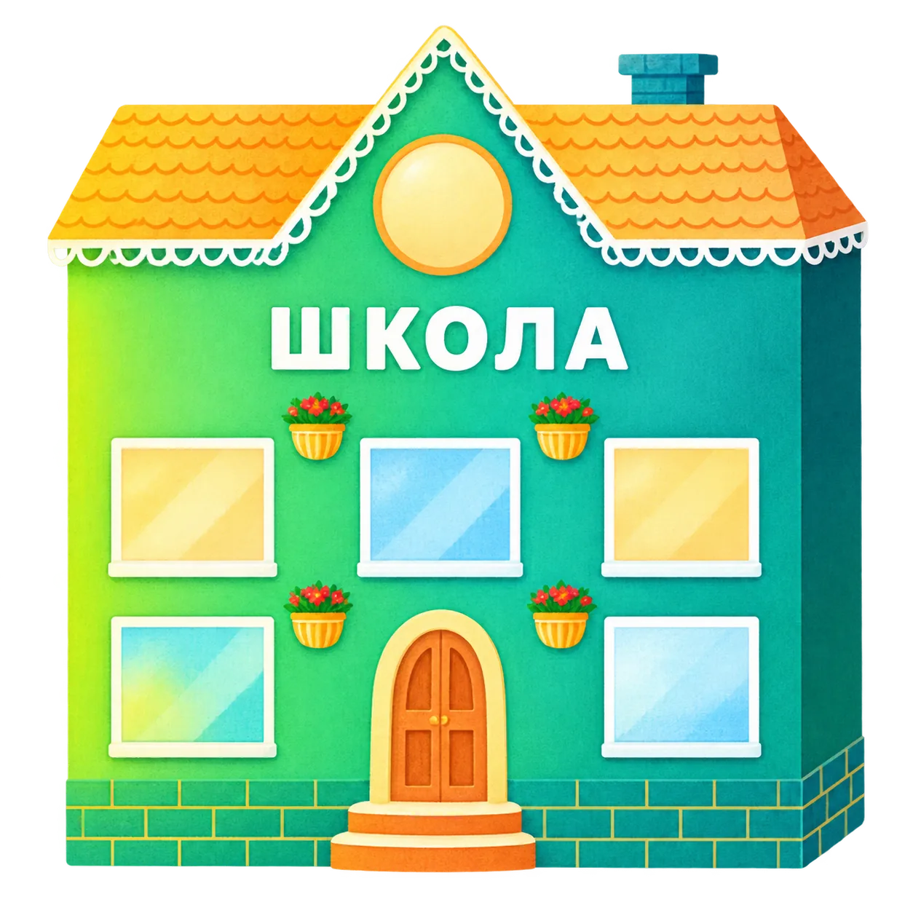
управленческих
решений
учебной мотивации
детей
асоциального
поведения
и вовлечённости
педагогов
Индекс развивающей среды
Цель:
Оценка степени, в которой образовательная среда является
развивающей.
На основе цифрового профиля среды
проектируются шаги по улучшению ее качества
Позволяет увидеть зоны роста и подключить необходимые инструменты для формирования развивающей среды.
Помогает повысить конкурентоспособность, став организацией, которая нацелена не только на достижение прямых результатов.
Способствует поддержанию в организации духовно-нравственных ценностей, гуманизма, милосердия, взаимопомощи и взаимоуважения.